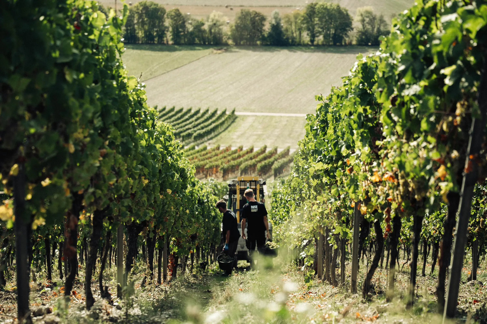
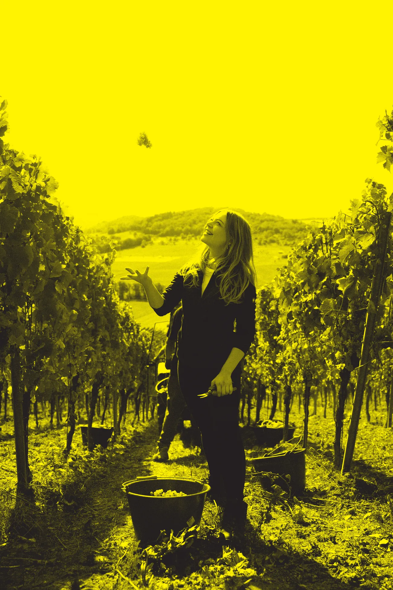

Stillwein
Entalkoholisierter Wein
Ohne Eile.
Steht ruhig im Glas und lässt sich Zeit – der OHNE für den langen Abend.
Stillwein probieren
Qualität entsteht im Weinberg.
Winzerhandwerk, modern gedacht: für alle, die den Alkohol weglassen wollen, aber nicht den Wein.

Entalkoholisierter Wein
Steht ruhig im Glas und lässt sich Zeit – der OHNE für den langen Abend.
Stillwein probierenEntalkoholisierter Perlwein mit zugesetzter Kohlensäure
Perlt im Glas und eröffnet die Runde – der OHNE zum Anstoßen.
Secco probieren„Ohne Alkohol.
Ohne Verzicht.“
Entalkoholisierter Wein · alkoholfrei (< 0,5 % vol)
Jetzt probieren